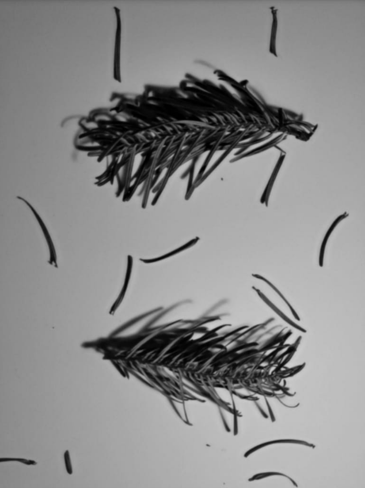
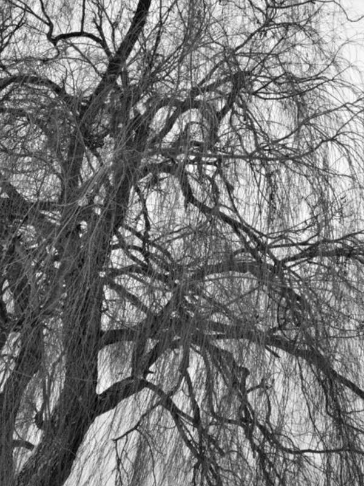
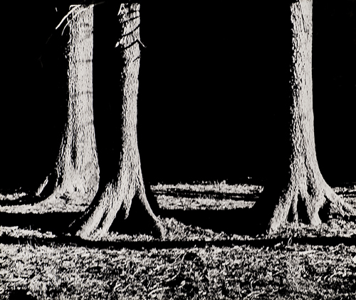
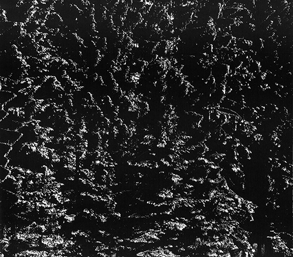

Ich will mit meiner Arbeit das Wesentliche von Menschen, Landschaften und Gegenständen sichtbar zeigen.
Monika von Boch
Suche Dir einen Baum oder mehrere Bäume und betrachte genau, wie sie gewachsen sind oder zueinander stehen. Mache ein Foto und bearbeite es.
Suche Dir einen Baum oder mehrere Bäume und betrachte genau, wie sie gewachsen sind oder zueinander stehen. Mache ein Foto und bearbeite es.


natur
1/6 – Monika von Boch, Verschneiter Wald am Wildacker, 1959/60, Silbergelatinepapier, Reproduktion, 30,3 x 39,8 cm

2/6 – Monika von Boch, "Zitterbäume", bei der Wieskirche, 1955, Silbergelatinepapier, Schwarzweißpositivabzug/Langzeitbelichtung, 50,4 x 59,7 cm
3/6 – Monika von Boch, Buchen im Schnee, 1960, 59 x 50 cm. Foto aus: Ernst-Gerhard Güse (Hg.): Monika von Boch. Fotografie. Saarbrücken 1992, S. 13

4/6 – Monika von Boch, Titel?, Jahr?, Foto aus: J. A. Schmoll genannt Eisenwerth: Monika von Boch das fotografische Werk 1950-1980. Dillingen 1982, S.
5/6 – Monika von Boch, Jahrestriebe der Fichte, 1963, Silbergelatinepapier, Positivabzug/low key, 50,1 x 60,7 cm
6/6 – Monika von Boch, Maisblatt I., 1959, Silbergelatinepapier, 59,1 x 43,4 cm
Im Werk von Monika von Boch gibt es eine große Anzahl von Bildern, die Wald, Pflanzen und vor allem Bäume zeigen.
Mehr...
Die Künstlerin interessiert sich dabei für jedes Detail, jeden Zustand des Wachstums, vom Samenkorn zum Baum, von der Wurzel über das Blatt bis zum Wald oder zur ganzen Landschaft. Sie sagt: "Das fasziniert mich eben auch so, wenn aus so einer kleinen Eichel dieser Riesenbaum entsteht. Dann finden sich in der Natur eben, in so einem Samenkorn diese ganzen Anlagen von so einem Riesenbaum oder einer kleinen Blüte oder was auch immer angelegt ist und sich immer gleich entwickelt." Monika von Boch fragt sich, wie man diese Zusammenhänge erkennen und sichtbar machen kann. Zum Teil gelingt ihr das, indem sie Pflanzen, Pflanzenteile oder auch Landschaften auf ihre bloße Form reduziert, so dass man sie manchmal in ihrer eigentlichen Erscheinung kaum noch erkennen kann. In den Formen und Strukturen sucht sie nach Übereinstimmungen, Mustern, Ähnlichkeiten, Anlagen, Maßverhältnissen, Ordnung. Sie nennt das die Suche nach dem Wesen der Dinge. Nach ihrem Verständnis ist dieses Wesen nicht sichtbar, sondern es liegt im Sichtbaren verborgen. Das klingt ein bisschen kompliziert, aber wenn Du ihre Bilder anschaust, merkst Du vielleicht, dass man durch dieses Herausgreifen und Entfremden Dinge plötzlich anders begreift. Sie werden zu lebendigen, elementaren Teilchen in einem großen, endlos zusammenhängenden Ganzen. Dieser besondere Blick hinter die Dinge oder durch sie hindurch zeichnet ihr Werk von Anfang an aus.
Dieser Spruch: Sie hat so schlechte Augen, aber sieht mehr als die anderen. Das ist aber das Beobachten und das hat sich so entwickelt durch das schlechte Sehen. Denn wenn sie nicht so gut erkennen, dann beobachten sie mehr, weil, das merke ich ja immer noch, heute sogar, das Beobachten, das ist nicht das Sehenkönnen. (Monika von Boch)